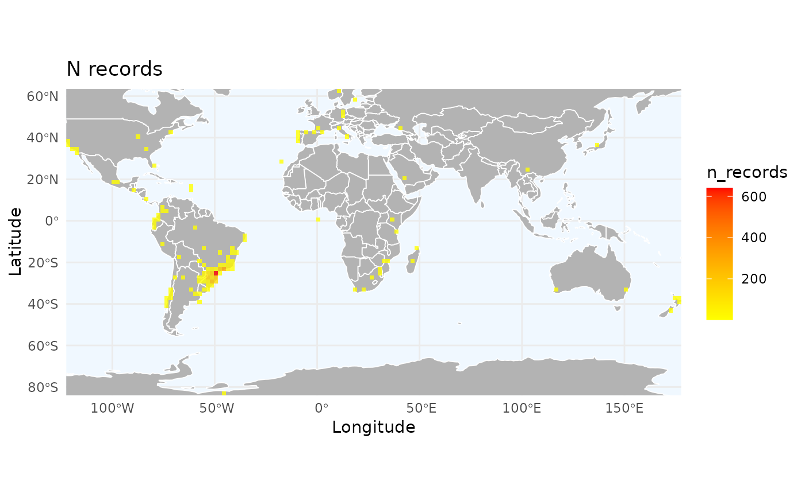
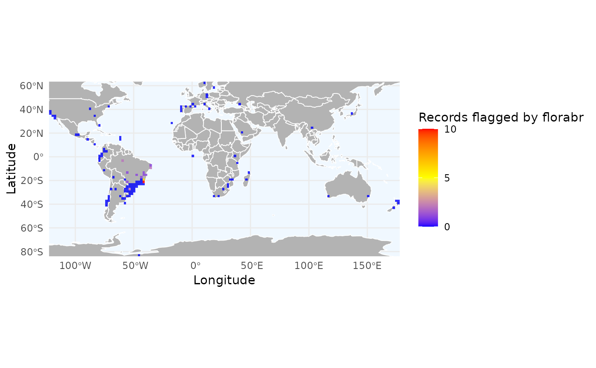

This function is the dedicated plotting tool for outputs from richness_here().
It automatically handles single-layer rasters (e.g., species richness) and
multi-layer rasters (e.g., multiple biological traits or flags), creating
a standardized visual using ggplot2.
Usage
ggrid_here(
grid,
low_color = "blue",
mid_color = "yellow",
high_color = "red",
alpha = 0.8,
continent = NULL,
continent_fill = "gray70",
continent_linewidth = 0.3,
continent_border = "white",
ocean_fill = "aliceblue",
extension = NULL,
theme_plot = ggplot2::theme_minimal()
)Arguments
- grid
(SpatRaster) A raster object generated by
richness_here().- low_color
(character) color for the lowest values. Default is "blue".
- mid_color
(character) color for the midpoint. Default is "yellow".
- high_color
(character) color for the highest values. Default is "red".
- alpha
(numeric) transparency of the grid (0-1). Default is 0.8.
- continent
(SpatVector) optional polygon layer for boundaries.
- continent_fill
(character) fill color for continents. Default is "gray70".
- continent_linewidth
(numeric) line width for continent boundaries. Default is 0.3.
- continent_border
(character) color of the continent polygon borders. Default is "white".
- ocean_fill
(character) background color for the ocean. Default is "aliceblue".
- extension
(SpatExtent or numeric) optional map extent.
- theme_plot
(theme) a
ggplot2theme object.
Examples
# Load example data
data("occ_flagged", package = "RuHere")
# Simple richness map
r_records <- richness_here(occ_flagged, summary = "records", res = 2)
ggrid_here(r_records)

# Multi-layer map (e.g., density of specific flags)
# Let's see where 'florabr' and 'duplicated' flags are concentrated
r_flags <- richness_here(occ_flagged, summary = "records",
field = c("florabr_flag", "iucn_flag"),
fun = function(x, ...) sum(!x, na.rm = TRUE), res = 2)
ggrid_here(r_flags)
